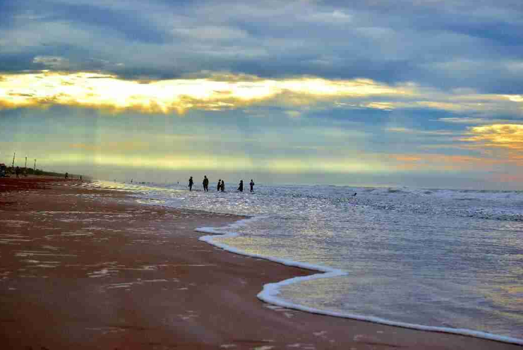

RISHIKONDA BEACH
Rushikonda Beach is located in Visakhapatnam on the coast of Bay of Bengal in the Indian state of Andhra Pradesh. The beach is maintained by the state tourism board, APTDC.An ideal place for sports like swimming, water skiing, wind surfing. Additionally, the Andhra Pradesh Tourism Department has made this beach an attractive tourist destination with cottages, restaurants and other facilities around it.Rushikonda beach has received the eco label 'Blue Flag' from India's Blue Flag Beaches Mission. With that, this beach has now got a place on the global tourism map. Rushikonda Beach was nominated for this project in 2017 and finalized in February 2018. Safety equipment like outdoor fitness equipment, continuous beach cleaning machines, CCTV cameras, life guards have been provided as part of this project.
YARADA BEACH
Yarada Beach falls under the category of famous beaches in Andhra Pradesh. This calm and serene beach offers a picturesque view of the golden sand and the stretch of hills. Bordered by hills on three sides and the Bay of Bengal on the other, this can be your next vacation stop. In contrast to Rishikonda, this is less crowded and yet to be commercialised.
- Best Time to Visit: November to March
- Famous for: Here are some of the unique factors that make Yarada such a fine specimen of a getaway destination:
- Dolphins nose
- Ross Hill Church.
- Dolphins nose
- Ross Hill Church.
Rama Krishna Beach
Ramakrishna Beach also known as R K Beach is situated on the east coast of Bay of Bengal in Visakhapatnam, Andhra Pradesh.[1] It is located near Dolphin's Nose.[2]
RK Beach gets its name from the Ramakrishna Mission ashram situated near the beach.Ramakrishna Beach in Vizag or R.K. The beach is one of the popular tourist attractions in Vizag as it is commonly known. At the beach, swimming, sunbathing, beach volleyball are popular activities. Aquarium, Kali Temple, Visakha Museum, seafood restaurants and roadside restaurants are other attractions
- Best Time to Visit: November to March
- Famous for: Besides rejoicing in the aesthetic surrounding of this beach, you can also take a stroll to the following equally remarkable spots nearby:
- INS Kurusura Submarine Museum
- TU 142 AirCraft Museum
- Matsya Darshini (Aquarium)
- INS Kurusura Submarine Museum
- TU 142 AirCraft Museum
- Matsya Darshini (Aquarium)
SURYA LANKA BEACH

Suryalanka Beach or Bapatla Beach is a beach in Bapatla district of the Indian state of Andhra Pradesh. It is located approximately 9 kilometers from Bapatla Bhavanarayana Swamy Temple and 50 miles south of Guntur City. It is located in the Bay of Bengal. The place has many resorts close to the beach.Suryalanka Beach is the perfect weekend getaway beach to spend time with friends and families. The natural beauty of the beach is major draw for people, who are looking to refresh and rejuvenate themselves. The shore of the beach is wide and spacious. The Suryalanka Beach overlooks the crystal blue waters of the Bay of Bengal. This beach is quite safe for swimming and sunbathing is another popular activity. Sunrise is very beautiful at this beach. The major tourist attraction of the beach is the sightseeing for dolphins in the month of November. Haritha Beach Resort run by AP Tourism provides accommodation here. Advance booking is advised for a weekend stay. Other than this beach resort, Bapatla town also has various affordable accommodations available. The Bhavanarayana Swamy temple at Bapatla town is another place which can be visited from here. From Bapatla town, this place can be reached by public buses and autos. Bapatla town has very good train and bus connectivity with major towns in Andhra Pradesh.
MYPADU
Mypadu Beach is located on the East coast of Bay of Bengal, at a distance of 25 km (16 mi) from SPSR Nellore district in Andhra Pradesh. The beach is maintained by the state tourism board, APTDC. The beach provides fishing opportunities for the local fishermen, and access to cruises for the tourists. The Andhra Pradesh Tourism Development Corporation (APTDC), is taking certain measures to promote Mypadu Beach as a tourist destination by setting up recreational activities such as water sports and development of resorts.
- Best Time to Visit: October to February
- Famous for: Here are some of the activities that most individuals visiting Mypadu like to take part in:
- Fishing
- Cruising
- Fishing
- Cruising
CHIRALA BEACH
Chirala, is a city in Bapatla district of the Indian state of Andhra Pradesh. It is a municipality and the headquarters of Chirala mandal in Chirala revenue division.As of 2011, it had a population of above 170,000.Chirala is the most populated city in Bapatla Lok Sabha Parliamentary Constituency.The city was also known as Kshirapuri, (క్షీరపురి, Telugu) which means "sea of milk" in Sanskrit.The city was carved out of Sudhanagaram, original name of Patha Chirala, that was granted to Chirala Anantharaju by Goparaju Ramanna, Minister of the Kakatiya king, Ganapati Deva, during Saka 1067 (1145 AD) as mentioned in the records obtained from the Madras Oriental Library. His descendant, Chirala Venkata Krishnudu, leased out the present Chirala area for raising a new township. Thus, present-day Chirala was born on 1604 AD.
KOTHAPATNAM BEACH
Kothapatnam is a small costal village in Prakasam district of the Indian state of Andhra Pradesh. It is located in Kothapatnam mandal in Ongole revenue division.Kothapatnam Beach is one amongst the top attractions in Ongole. Located 18 km from the city, the beach is a great source of entertainment for local people and tourists. The clear blue waters of the sea, the long stretches of sand and the gentle breeze mesmerize you. Boating is available here.But for the Karthika Purnima festival, when locals throng in thousands, the beach is less frequented.
- Best Time to Visit: October to March
- Famous for: This beach is mostly famous for Karthika Purnima festival
APPIKONDA BEACH
Appikonda is known as one of the best beaches in Andhra Pradesh. They achieved this position by maintaining cleanliness throughout the beach and nearby areas. Since this particular beach is far from Visakhapatnam city, it does not generally get overcrowded, unlike other beaches of Andhra Pradesh.Appikonda is a neighborhood situated on the southern part of Visakhapatnam City, India,and is about 30 km from the Visakhapatnam .[1] Appikonda is known for the Someswara Swamy Temple.[2]This temple built around 9th century AD.
- Best Time to Visit: OCTOBER to March
- Famous for: Some popular activities and spots near this beach are as follows:
- Swimming nose
- snorkelling
- Shiva Temple
.
- Swimming nose
- snorkelling
- Shiva Temple
MANGINAPUDI BEACH
Manginapudi Beach is located on the coast of Bay of Bengal, at a distance of 11 km (6.8 mi) from Machilipatnam of the Indian state of Andhra Pradesh.[1] The beach is maintained by the state tourism board, APTDC.Manginapudi Beach is 11 km from Machilipattana. is far away. A small fishing village. The beach here has black mud instead of sand. It was a gateway for westerners to reach the east coast. The sea is shallow in the beach here. Kuchipudi dance is taught to dance students at the dance school located on this beach . Here on the coast Dattashram is a shrine, a place of pilgrimage. It is also known as Dattarameswaram. The Shiva temple here is very old but the Dattashram was built recently. As in Rameswaram, there are nine wells here in Manginapudi.Hence it is known as Dattarameswaram. Devotees come here in droves to bathe on Kartika Purnami.
- Best Time to Visit: FEBRUARY to MARCH
- A popular spot near this beach is an Old Lighthouse
PERUPALEM BEACH
Perupalem Beach is located on the coast of Bay of Bengal, in West Godavari district of the Indian state of Andhra Pradesh. The beach is being developed for tourism by the state tourism board, APTDC
- Best Time to Visit: FEBRUARY to MARCH
- This beach is mostly famous for the following:
- Mery Matha church
- Perupalem beach festival
- Mery Matha church
- Perupalem beach festival
LAWSON'S BEACH
Lawsons Bay Colony is a neighbourhood located in the city of Visakhapatnam state of Andhra Pradesh, India. It is one of the peaceful and beautiful residential areas in the city.It is located beside MVP Colony and is one of the costliest residential areas in the city, with a beautiful beach newly inaugurated and parks making it one of the best places to live in Visakhapatnam.
- Best Time to Visit: October to March
- This beach is mostly famous for the following:
- INS Kursura Submarine Museum
- Kailasagiri Peak
- Dolphin’s nose
- TU 142 Aircraft Museum
- INS Kursura Submarine Museum
- Kailasagiri Peak
- Dolphin’s nose
- TU 142 Aircraft Museum
VODAREVU BEACH
Vodarevu is located around 8km away from Chirala. It is among the most visited beaches in this district. Hence the flow of tourists is fairly regular, mainly during the weekends. If you plan to visit here, remember to check out Suryalanka beach as well which is just 28 km from Vodarevu.
in the city, with a beautiful beach newly inaugurated and parks making it one of the best places to live in Visakhapatnam.
- Best Time to Visit: AUGUST to DECEMBER
- This beach is mostly famous for the following:
- water Sports
- Swimming
- Boating in the sea
- Light House
- water Sports
- Swimming
- Boating in the sea
- Light House
UPPADA BEACH
Clear water, white or silver sand and glittery water make Uppada beach more tempting. This is proclaimed as one of the safest beaches as its wide shoreline gradually inclines to the water. Those who are planning to visit here must not miss the sunrises and sunsets.Uppada beach is a beautiful beach in the state of Andhra Pradesh .Andhra Pradesh State Tourism Development Corporation is taking various measures for the development of tourism in this coast.The coast is famous not only for tourism but also for fishing . Prawn hunting is mainly done here .
- Best Time to Visit: October to March
- This beach is mostly famous for the following:
- Weaving
- Fishery Station
- Weaving
- Fishery Station
KRISHNAPATNAM BEACH
Krishnapatnam is among the most beautiful beaches in Nellore. This region is primarily known as a port town. The long stretch of the seashore, shadowed by palm trees on one side, seems like a painted landscape. Experiencing this natural and peaceful beach can offer unforgettable relief from mundane life.
- Best Time to Visit: October to March
- This beach is mostly famous for the following:
- Ubbalamadugu Falls
- Pulicat Lake
- Ayyappa Temple
- Ubbalamadugu Falls
- Pulicat Lake
- Ayyappa Temple